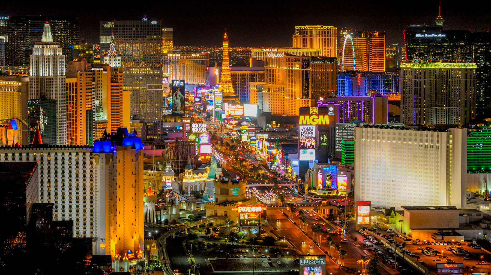
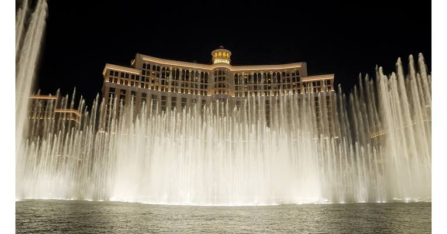

The Las Vegas Strip
The Las Vegas Strip is one of the most famous areas in the city. It is filled with hotels, casinos, restaurants, shops, lights, and entertainment.

Photo source: Travel Nevada
Most Famous Gambling Capital
Although Las Vegas is known as the biggest gambling destination in the US, it is technically 2nd as the biggest in the world, as Macau in China is the largest gambling capital in the world. However, Las Vegas is more well-known and popular for gambling, as it is a major tourist destination. And, if you ask me, there's no place like Vegas!
Bellagio Fountains
The Bellagio Fountains are a popular free attraction. Water, music, and lights are combined into a large performance in front of the Bellagio hotel. This is one of the many reasons why I like to stay at the Bellagio hotel, as if I get a good room, I can watch the fountains straight from my hotel room!

Photo source: PR Newswire